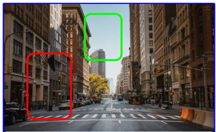

PGT: We overlay procedurally generated geometric tasks and efficiently inject them into stPGT: We overlay procedurally generated geometric tasks and efficiently inject them into standard training Figure 1. Overview of PGT. Top: The construction of our procedurally generated data to augment instruction tuning training datasets. Abstract geometric primitives are overlaid to training data, when available. Bottom: (Left) Examples of failure modes in fine-grained relational and spatial understanding of state-of-the-art MLLMs. In the first example the model can rely on the fact that a bowl is usually on a table and in the second example it can rely on the shortcut where object higher up as usually further from the camera (Right) PGT performance boosts in relational, quantitative, and 3D/depth understanding over the baseline when using different instruction tuning dataset sizes.这张图概括 PGT 的整体方法流程。阅读时先看模块之间传递的训练信号，再看作者如何把目标拆成可优化的子问题。

Figure · Extracted visual evidenceThis visual block was extracted from the paper PDF without a structured caption. It is included only as supporting visual evidence for PGT; prefer figures with explicit captions when available.这张图来自论文 PDF 的结构化抽取。当前用于辅助理解 PGT 的方法或实验，请结合正文精读段落一起看。
核心问题
它提示多模态预训练可以用廉价、可控的 dense visual grounding signal 补足语义 caption 的盲区。